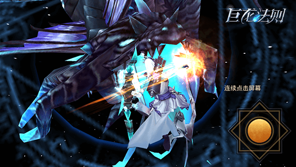
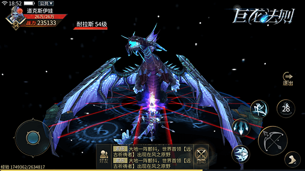
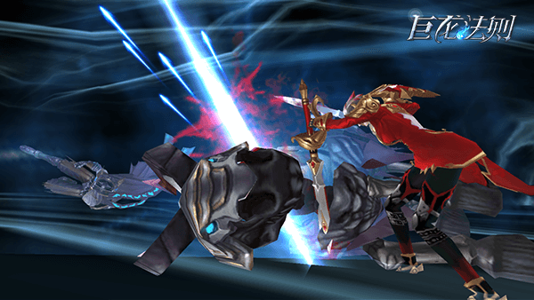

《巨龙法则》是一款以PK竞技为核心的的3D炫战MMORPG手游，采用业内领先的引擎技术，画质精美酷炫已达到电影级效果，玩法多样，造型百变，流光酷炫，超强的交互体验，极致打击感，强PK，强竞技

拳拳入肉刀刀碎屏，顶尖技术重新定义“打击感”
打击感是RPG游戏的重要标签，《巨龙法则》拥有飞跃时代的打击感和画面特效。无论是PVE还是PVP，玩家都可以在战斗中随时切换符文从而改变技能，灵活多变，让你的操作体验爽到爆，隔着屏幕也可以感受到喷射四溅的鲜血和残暴撕裂的肌肉。

这种极致的打击感源自动作捕捉技术、多种受击音效判断、多种死亡效果动态计算等顶级动作游戏技术。动作捕捉技术目前虽然广泛运用于3A大作之中，但在手游里还是十分罕见的，该技术能够捕捉游戏者的各种动作，用以驱动游戏环境中角色的动作，给游戏者以一种全新的参与感受，极大地加强了游戏的真实感和互动性。

《巨龙法则》所定义的“打击感”不仅仅是视觉上的，更是听觉，玩家在游戏内通过连续快砍，可以感受拳拳到肉，刀刀溅血的受击音效，赋予了玩家战斗节奏感，让玩家充分感受三维立体的击打效果。